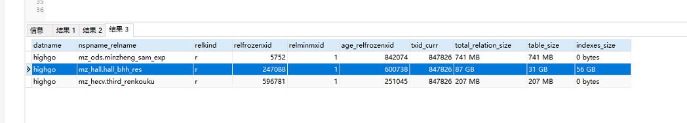
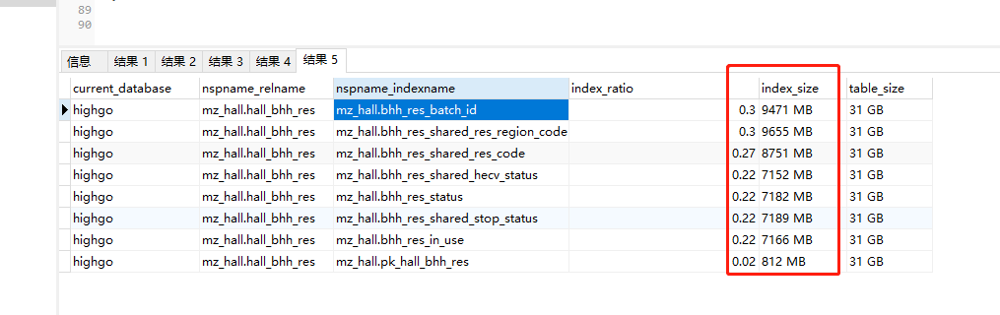
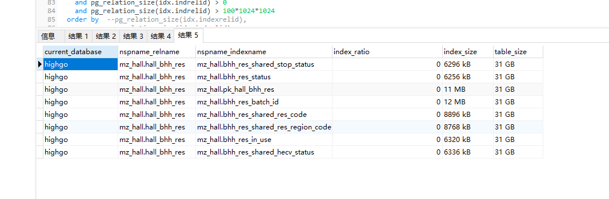

postgresql表空间优化-重建索引(生产环境教训）
前言
首先声明，我是pg的小白，以前开发基本上都是oracle或者mysql,到了新公司接手项目为postgres数据库项目，遇到了很多问题个人感觉比较典型，所以记录下来希望以后能够改进。
问题说明
接到用户反馈，生产环境某个页面数据加载一直超时以及定时任务不执行的问题。接到反馈后陆续进行分析，比页面查询内容为统计集合页面，系统设计了较多事务性的定时任务对需要对此表进行频繁的新增，更新，删除操作，开始以为是出现了死锁以及数据库内存不足引起，通过重启服务以及数据库的形式，进行排查并不是死锁问题以及资源问题；继续排查发现数据库文件大小极度膨胀，由45G在2天内膨胀到100多个G，思考可能是表空间需要优化，通过百度找到了一些教程，确定了是中间状态表频繁读写以及更新等操作引发了表空间膨胀，通过尝试各种教程以及同事有这方面的经验，逐步解决了此问题，下面说明问题的解决经过。
表空间优化（重建索引）
问题排查确认
查找表空间的占用情况
- 执行查找表空间>1G的表，并展示表空间、索引空间
2
3
4
5
6
7
8
9
10
11
12
13
14
15
16
17
18
19
20
21
22
23
24
25
26
27
28
29
30
31
32
33
34
35
current_database ( ) AS datname,
pt.schemaname || '.' || pt.relname AS schemaname_relname,
--' vacuum verbose '||pt.schemaname||'.'||pc.relname||' ;' as vacuum_rel,
--' vacuum full verbose '||pt.schemaname||'.'||pc.relname||' ;' as vacuum_full_rel,
pc.relfrozenxid,
age( pc.relfrozenxid ) AS age_relfrozenxid,
txid_current ( ) AS txid_curr,
pg_size_pretty ( pg_total_relation_size ( pt.relid ) ) AS total_relation_size,
pg_size_pretty ( pg_table_size ( pt.relid ) ) AS table_size,
pg_size_pretty ( pg_indexes_size ( pt.relid ) ) AS indexes_size,
pt.n_live_tup,
pt.n_dead_tup,
round(
CASE
WHEN ( pt.n_live_tup + pt.n_dead_tup ) = 0 THEN
0.0000 ELSE pt.n_dead_tup / ( ( pt.n_live_tup + pt.n_dead_tup ) * 1.0 )
END,
4
) AS dead_tup_lv
FROM
pg_stat_all_tables pt
LEFT OUTER JOIN pg_class pc ON pt.relid = pc.oid
WHERE
1 = 1
AND pt.schemaname NOT IN ( 'pg_catalog', 'information_schema' )
AND pt.schemaname NOT LIKE'pg_toast%'
AND pg_table_size ( pt.relid ) >= 1000 * 1024 * 1024
ORDER BY
CASE
WHEN ( pt.n_live_tup + pt.n_dead_tup ) = 0 THEN
0 ELSE pt.n_dead_tup / ( ( pt.n_live_tup + pt.n_dead_tup ) * 1.0 )
END DESC;
- 查询结果:res表空间过大

进一步分析：res的索引
- 查询res表的索引情况
2
3
4
5
6
7
8
9
10
11
12
13
14
15
16
17
18
19
20
21
22
23
24
25
current_database ( ),
pn2.nspname || '.' || pc2.relname AS nspname_relname,
pn.nspname || '.' || pc.relname AS nspname_indexname,
round( 100 * pg_relation_size ( idx.indexrelid ) / pg_relation_size ( idx.indrelid ) ) / 100 AS index_ratio,
pg_size_pretty ( pg_relation_size ( idx.indexrelid ) ) AS index_size,
pg_size_pretty ( pg_relation_size ( idx.indrelid ) ) AS table_size
FROM
pg_index idx
LEFT OUTER JOIN pg_class pc ON idx.indexrelid = pc.oid
LEFT OUTER JOIN pg_namespace pn ON pc.relnamespace = pn.oid
LEFT OUTER JOIN pg_class pc2 ON idx.indrelid = pc2.oid
LEFT OUTER JOIN pg_namespace pn2 ON pc2.relnamespace = pn2.oid
WHERE
1 = 1
AND pn.nspname NOT IN ( 'pg_catalog', 'information_schema' )
AND pn.nspname NOT LIKE'pg_toast%'
AND pc.relkind = 'i'
AND pc2.relkind = 'r'
AND pg_relation_size ( idx.indrelid ) > 0
AND pg_relation_size ( idx.indrelid ) > 100 * 1024 * 1024
ORDER BY--pg_relation_size(idx.indexrelid),
round( 100 * pg_relation_size ( idx.indexrelid ) / pg_relation_size ( idx.indrelid ) ) / 100 DESC;
执行结果res表索引过多且过大

尝试空间优化
查找表空间回收指令并执行:vacuum ‘表名’
执行后表空间无变化（无效，可能是我数据库配置有问题大家可以尝试一下）
尝试重建索引
跟同事沟通表索引过大问题，共同寻找表索引回收指令：REINDEX TABLE ‘表名’
执行结果:
成功回收表索引空间
后续工作方法
表索引空间回收以后，执行相关查询均正常执行，长舒一口气，恢复系统生产系统运行。
手动的去回收表索引空间以及表空间不是办法，下一步：
一优化代码以及数据库设计
减少多表频发的增删以及更新操作，优化表索引减少表关于索引的相关设计；
配置配置数据库开启vacuum，并配置先关参数进行
配置自动回收可参照:csdn:Vacuum使用心得
本博客所有文章除特别声明外，均采用 CC BY-NC-SA 4.0 许可协议。转载请注明来自 haydenzhou小木屋！